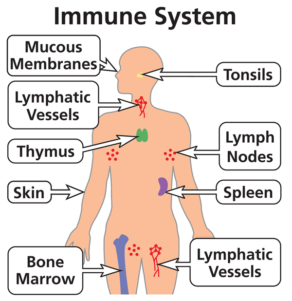

Macrophages are a part of your immune system and is the thing that fights off bacteria. The bacteria is swallowed whole by a macrophage and gets trapped in a membrane and is broken down by enzymes and is killed. The macrophages then command the blood vessels to release water where the bacteria are entering, this causes inflammation. When the macrophages can't battle anymore, they call neutrophils from the blood and the neutrophils come to the macrophages. The neutrophils fight so hard that they kill body cells accidentally. They also generate barriers that traps and kills that bacteria. They kill so furiously that after 5 days if they aren't dead, they commit suicide, so they don't cause too much damage.
If the neutrophils don't die, the macrophages call the dendritic cells. The Dendretic cells rips the bacteria up and leaves the ripped-up bacteria on their outer layer. They then either call antivirus or an army of bacteria killers. Let's say in this instance the call antivirus, T-cells are made and only a quarter survive, the surviving ones are equipped with a specific set up. The dendritic cells are waiting for the T-cells to arrive. The T-cells then connect with the Dendritic cells by holding onto the bacteria pieces on the outer layer of the dendritic cells.

When the dendritic cells find the right T-cells, the T-cells start duplicating, some become memory T helper cells, some go to the macrophages, and some go to the center of the lymph node to wake the B-cells up. When the T-cells touch the>B-cells, the B-cells start duplicating. The B-cells work so hard that they sometimes die from exhaustion, the T helper cell, that woke them up, then helps them, basically reviving them before they die.
The B-cells produce antibodies, there are a few different types of antibodies, but the B-cells know which one to produce. By the time the T helper cells get back, the bacteria have multiplied and is starting to hurt the body. The macrophages then get so tired they begin to die, but the T helper cells order them to keep working and help them, like what they did to the B-cells. Meanwhile billions of antibodies are flooding the battlefield, killing and/or disabling the bacteria. The antibodies are made to stick to the bacteria, killing it in the process. Macrophages then finish off the bacteria that the antibodies have stuck to. At this point all the bacteria is dead and many body cells also. Without any use, the macrophages and the T helper cells commit suicide. The memory cells stay behind. So, if that same bacteria returns, they know how to kill it.